架构图
首先给出一张简单的架构图，初步的了解下流程。

客户端创建请求，将它放入到一个队列里。如果客户端采用了同步请求，那么它会等待响应。如果采用了异步请求，它会传递回调函数，立刻返回。
队列采用先进先出的方式，SendThread 线程会从队列中取出请求，通过底层的 socket 发送到服务端。当客户端收到响应后，SendThread 会负责解析响应。如果客户端采用了同步请求，那么它会通知客户端。如果客户端采用异步请求，那么会将响应传递给 EventThread 线程，由它负责执行回调。
Packet
zookeeper 对于请求和响应，它使用 Packet 类封装在一起。zookeeper 还支持异步，所以 Packet 还包含了回调函数。这个类很简单，只是这些成员的集合。
通信线程
SendThread 有两个 Packet 队列，一个是存储等待发送的请求（称作为 outgoingQueue），另一个是已经发送但还没响应的请求（称作为 pendingQueue）。SendThread 从 outgoingQueue 中提取请求，序列化，通过 socket 通信发送出去后，就将这个请求放进 pendingQueue。
SendThread 提供了 readResponse 方法，用于解析响应。根据响应头部的 xid，它有下面三种特殊类型的响应。
| xid |
含义 |
| -1 |
用于 Watch 通知 |
| -2 |
用于 Ping 响应 |
| -4 |
用于 认证响应 |
如果是 Watch 通知，会生成 WatchEvent 放入到队列里，由 EventThread 线程单独处理。
在解析完响应后，对于同步请求执行通知操作，对于异步请求，将其放入队列里，由 EventThread 线程单独处理。
1
2
3
4
5
6
7
8
9
10
11
12
13
14
15
16
17
18
|
private void finishPacket(Packet p) {
......
// cb属性代表着回调函数，如果为空则是同步请求，否则为异步请求
if (p.cb == null) {
synchronized (p) {
// 设置 finished 属性
p.finished = true;
// 执行通知
p.notifyAll();
}
} else {
// 设置 finished 属性
p.finished = true;
// 添加到队列里
eventThread.queuePacket(p);
}
}
|
后台线程
EventThread 负责执行回调函数，还包含处理 Watch 事件。EventThread 的原理很简单，只是维护了一个队列，不停的取出任务执行。对于 Watch 事件需要额外说一下，用户注册的 Watch 回调，只能用一次。我们通过 ZKWatchManager 的源码就可以看出原因，它的 materialize 方法负责获取 Watch 回调。
1
2
3
4
5
6
7
8
9
10
11
12
13
14
15
16
17
18
19
20
21
22
23
24
25
26
27
28
29
30
31
|
static class ZKWatchManager implements ClientWatchManager {
// 保存节点数据变化的回调
private final Map<String, Set<Watcher>> dataWatches = new HashMap<String, Set<Watcher>>();
// 保存节点删除或创建的回调
private final Map<String, Set<Watcher>> existWatches = new HashMap<String, Set<Watcher>>();
// 保存子节点变化的回调
private final Map<String, Set<Watcher>> childWatches = new HashMap<String, Set<Watcher>>();
public Set<Watcher> materialize(Watcher.Event.KeeperState state, Watcher.Event.EventType type, String clientPath) {
Set<Watcher> result = new HashSet<Watcher>();
switch (type) {
// 这里以节点变化的情况为例
case NodeDataChanged:
case NodeCreated:
synchronized (dataWatches) {
// 从dataWatches列表删除
addTo(dataWatches.remove(clientPath), result);
}
synchronized (existWatches) {
// 从existWatches列表删除
addTo(existWatches.remove(clientPath), result);
}
break;
.......
// 其余变化情况
}
}
}
|
可以看到 ZKWatchManager 每次获取 Watch 回调时，都是从集合中删除掉。所以用户想持续性的注册 Watch，需要在回调函数中重新注册自身。
Socket 通信
负责与服务端进行 socket 通信的类是 ClientCnxnSocket，它都是异步的方式，由 ClientCnxnSocket 类表示。ClientCnxnSocket 是一个抽象类，有两个子类 ClientCnxnSocketNIO 和 ClientCnxnSocketNetty，分别基于 selector 和 基于 netty 实现。这里主要讲讲 selector 的实现原理。
它的 doTransport 方法负责处理 socket 事件，比如OP_CONNECT，OP_READ，OP_WRITE。
- 对于 OP_CONNECT 事件，表示 socket 连接创建，接下来会发送 ConnectRequest 请求，来获取 sessionId。
- 对于 OP_READ 事件，表示有响应数据，然后解析响应。
- 对于 OP_WRITE 事件，表示 socket 可写，然后从队列中提取请求发送。
创建连接
接下来看看连接创建的过程，zookeeper 支持 SASL 框架（用来认证和安全的）。创建连接分为两个步骤，socket 连接和初始化请求。
socket 的连接由 ClientCnxnSocket 负责，它使用异步连接的方式。当 socket 连接成功后，如果开启 sasl 认证，那么会发送认证请求。最后发送 ConnectRequest 请求，当收到响应后，需要提取出 sessionId。这个 sessionId 由服务端分配，标识此次连接。
客户端请求
ZooKeeper 客户端为每种请求提供了两种阻塞方式，异步和同步。我们以 create 请求为例，分别介绍同步方式和异步方式。
同步请求
1
2
3
4
5
6
7
8
9
10
11
12
13
14
15
16
17
18
19
20
21
22
23
24
25
26
27
28
29
30
|
public class ZooKeeper implements AutoCloseable {
protected final ClientCnxn cnxn;
public String create(final String path, byte data[], List<ACL> acl,
CreateMode createMode) {
// 创建请求
RequestHeader h = new RequestHeader();
.....
// 提交请求并且等待响应
ReplyHeader r = cnxn.submitRequest(h, request, response, null);
return response.getPath();
}
}
public class ClientCnxn {
public ReplyHeader submitRequest(...) {
ReplyHeader r = new ReplyHeader();
// 将请求放入队列中
Packet packet = queuePacket(h, r, request, response, null, null, null,
null, watchRegistration, watchDeregistration);
// 使用 packet 实例的监视锁
synchronized (packet) {
// 判断条件是finished属性
while (!packet.finished) {
packet.wait();
}
}
return r;
}
}
|
回顾下 SendThread 在解析完请求，都会调用 finishPacket 方法，这里面会设置 finished 属性为 true，并且执行通知。
异步请求
1
2
3
4
5
6
7
8
9
10
|
public class ZooKeeper implements AutoCloseable {
public void create(final String path, byte data[], List<ACL> acl,
CreateMode createMode, StringCallback cb, Object ctx) {
// 创建请求
RequestHeader h = new RequestHeader();
......
// 将请求放入队列中
cnxn.queuePacket(h, r, request, response, cb, clientPath,
serverPath, ctx, null);
}
|
异步请求需要传递回调函数 StringCallback， 和自定义的回调参数 Object。后台 EventThread 线程会执行回调函数。
异常处理
zookeeper 客户端是通过网络与服务端通信的，而网络也是最不稳定的一环，接下来看看 zookeeper 客户端是如何处理网络异常的。
java 在网络异常时会抛出 IOException，通过 ClientCnxnSocket 抽象类的 doTransport 接口声明就可以看出来。
1
2
3
4
|
abstract class ClientCnxnSocket {
abstract void doTransport(int waitTimeOut, List<Packet> pendingQueue, ClientCnxn cnxn)
throws IOException, InterruptedException;
}
|
doTransport 接口负责处理 socket 的连接，读写事件，在 SendThread 线程中被循环调用。继续看 SendThread 是如何处理这些异常的，下面代码做了部分简化。
这里还要额外说下 zookeeper 集群，从 3.4.0 版本开始，支持只读模式，默认是关闭的。如果开启了只读模式，那么这个节点即使与集群的连接断开，仍能提供读操作。客户端如果连接的节点是只读模式，那么它会试图找到正常模式的节点。
1
2
3
4
5
6
7
8
9
10
11
12
13
14
15
16
17
18
19
20
21
22
23
24
25
26
27
28
29
30
31
32
33
34
35
36
37
38
39
40
41
42
43
44
45
46
47
48
49
50
51
52
53
54
55
56
57
|
class SendThread extends ZooKeeperThread {
// 正常模式的服务端地址
private InetSocketAddress rwServerAddress = null;
public void run() {
int to;
InetSocketAddress serverAddress = null;
while (state.isAlive()) {
try {
// 检查连接是否正常，否则可能需要重新建立
if (!clientCnxnSocket.isConnected()) {
// 如果指定了closing，那么表示需要退出循环
if (closing) {
break;
}
if (rwServerAddress != null) {
// 如果发现集群是正常模式
serverAddress = rwServerAddress;
rwServerAddress = null;
} else {
// 挑选下一个地址进行连接
serverAddress = hostProvider.next(1000);
}
// 连接服务端
startConnect(serverAddress);
}
// 计算是否超时
if (state.isConnected()) {
to = readTimeout - clientCnxnSocket.getIdleRecv();
} else {
to = connectTimeout - clientCnxnSocket.getIdleRecv();
}
// 如果超时，则抛出异常
if (to <= 0) {
throw new SessionTimeoutException(warnInfo);
}
if (state == States.CONNECTEDREADONLY) {
// 当前是只读模式，那么向其他节点发送ping请求，检查集群是否为正常模式
// 如果是正常模式，那么抛出异常 RWServerFoundException
pingRwServer();
}
// 处理socket事件
clientCnxnSocket.doTransport(to, pendingQueue, ClientCnxn.this);
} catch (Throwable e) {
if (closing) {
break;
} else {
// 这里的cleanup方法，首先重置了底层的socket，然后对于队列里的请求都立即响应ConnectionLost 异常
cleanup();
}
}
}
}
}
|
这里简单说下上面代码的流程，首先它最外层是一个循坏，循环里面处理着创建连接，读写通信。首先是从提供的地址列表中，选出一个地址创建连接，然后根据 ConnectRequest 请求的响应，可以判断出该节点是否处于只读模式。如果处于只读模式，那么 state 属性值为 CONNECTEDREADONLY。它会试图调用 pingRwServer 方法向别的节点发送请求，查看是否处于正常模式，如果发现是正常模式，那么会抛出异常，然后调用 cleanup 方法重置 socket 。
如果底层的 socket 通信断开抛出异常，那么同样会被捕获到，触发 cleanup 方法重置 socket，然后从地址列表中挑选出另外一个进行连接。